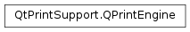

QPrintEngine¶
Detailed Description¶
The
PySide2.QtPrintSupport.QPrintEngineclass defines an interface for howPySide2.QtPrintSupport.QPrinterinteracts with a given printing subsystem.The common case when creating your own print engine is to derive from both
PySide2.QtGui.QPaintEngineandPySide2.QtPrintSupport.QPrintEngine. Various properties of a print engine are given withPySide2.QtPrintSupport.QPrintEngine.property()and set withPySide2.QtPrintSupport.QPrintEngine.setProperty().See also
-
class
PySide2.QtPrintSupport.QPrintEngine¶
-
PySide2.QtPrintSupport.QPrintEngine.PrintEnginePropertyKey¶ This enum is used to communicate properties between the print engine and
PySide2.QtPrintSupport.QPrinter. A property may or may not be supported by a given print engine.Constant Description QPrintEngine.PPK_CollateCopies A boolean value indicating whether the printout should be collated or not. QPrintEngine.PPK_ColorMode Refers to QPrinter.ColorMode, either color or monochrome.QPrintEngine.PPK_Creator A string describing the document’s creator. QPrintEngine.PPK_Duplex A boolean value indicating whether both sides of the printer paper should be used for the printout. QPrintEngine.PPK_DocumentName A string describing the document name in the spooler. QPrintEngine.PPK_FontEmbedding A boolean value indicating whether data for the document’s fonts should be embedded in the data sent to the printer. QPrintEngine.PPK_FullPage A boolean describing if the printer should be full page or not. QPrintEngine.PPK_NumberOfCopies Obsolete. An integer specifying the number of copies. Use instead. QPrintEngine.PPK_Orientation Specifies a QPrinter.Orientationvalue.QPrintEngine.PPK_OutputFileName The output file name as a string. An empty file name indicates that the printer should not print to a file. QPrintEngine.PPK_PageOrder Specifies a QPrinter.PageOrdervalue.QPrintEngine.PPK_PageRect A PySide2.QtCore.QRectspecifying the page rectangleQPrintEngine.PPK_PageSize Obsolete. Use instead. QPrintEngine.PPK_PaperRect A PySide2.QtCore.QRectspecifying the paper rectangle.QPrintEngine.PPK_PaperSource Specifies a QPrinter.PaperSourcevalue.QPrintEngine.PPK_PaperSources Specifies more than one QPrinter.PaperSourcevalue.QPrintEngine.PPK_PaperName A string specifying the name of the paper. QPrintEngine.PPK_PaperSize Specifies a QPrinter.PaperSizevalue.QPrintEngine.PPK_PrinterName A string specifying the name of the printer. QPrintEngine.PPK_PrinterProgram A string specifying the name of the printer program used for printing, QPrintEngine.PPK_Resolution An integer describing the dots per inch for this printer. QPrintEngine.PPK_SelectionOption QPrintEngine.PPK_SupportedResolutions A list of integer QVariants describing the set of supported resolutions that the printer has. QPrintEngine.PPK_WindowsPageSize An integer specifying a DM_PAPER entry on Windows. QPrintEngine.PPK_CustomPaperSize A PySide2.QtCore.QSizeFspecifying a custom paper size in theQPrinter.Pointunit.QPrintEngine.PPK_PageMargins A QList<PySide2.QtCore.QVariant> containing the left, top, right and bottom margin values in theQPrinter.Pointunit.QPrintEngine.PPK_CopyCount An integer specifying the number of copies to print. QPrintEngine.PPK_SupportsMultipleCopies A boolean value indicating whether or not the printer supports printing multiple copies in one job. QPrintEngine.PPK_QPageSize Set the page size using a PySide2.QtGui.QPageSizeobject.QPrintEngine.PPK_QPageMargins Set the page margins using a QPairofPySide2.QtCore.QMarginsFandQPageLayout.Unit.QPrintEngine.PPK_QPageLayout Set the page layout using a PySide2.QtGui.QPageLayoutobject.QPrintEngine.PPK_CustomBase Basis for extension.
-
PySide2.QtPrintSupport.QPrintEngine.abort()¶ Return type: PySide2.QtCore.boolInstructs the print engine to abort the printing process. Returns true if successful; otherwise returns
false.
-
PySide2.QtPrintSupport.QPrintEngine.metric(arg__1)¶ Parameters: arg__1 – PySide2.QtGui.QPaintDevice.PaintDeviceMetricReturn type: PySide2.QtCore.intReturns the metric for the given
id.
-
PySide2.QtPrintSupport.QPrintEngine.newPage()¶ Return type: PySide2.QtCore.boolInstructs the print engine to start a new page. Returns
trueif the printer was able to create the new page; otherwise returnsfalse.
-
PySide2.QtPrintSupport.QPrintEngine.printerState()¶ Return type: PySide2.QtPrintSupport.QPrinter.PrinterStateReturns the current state of the printer being used by the print engine.
-
PySide2.QtPrintSupport.QPrintEngine.property(key)¶ Parameters: key – PySide2.QtPrintSupport.QPrintEngine.PrintEnginePropertyKeyReturn type: object Returns the print engine’s property specified by
key.
-
PySide2.QtPrintSupport.QPrintEngine.setProperty(key, value)¶ Parameters: - key –
PySide2.QtPrintSupport.QPrintEngine.PrintEnginePropertyKey - value – object
Sets the print engine’s property specified by
keyto the givenvalue.- key –
© 2018 The Qt Company Ltd. Documentation contributions included herein are the copyrights of their respective owners. The documentation provided herein is licensed under the terms of the GNU Free Documentation License version 1.3 as published by the Free Software Foundation. Qt and respective logos are trademarks of The Qt Company Ltd. in Finland and/or other countries worldwide. All other trademarks are property of their respective owners.